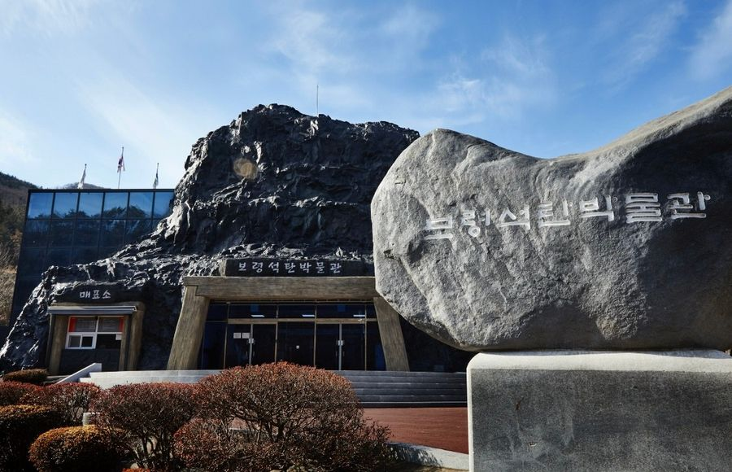
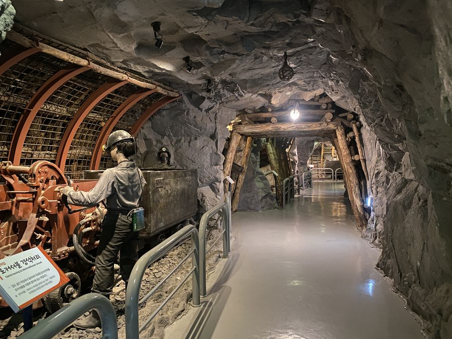
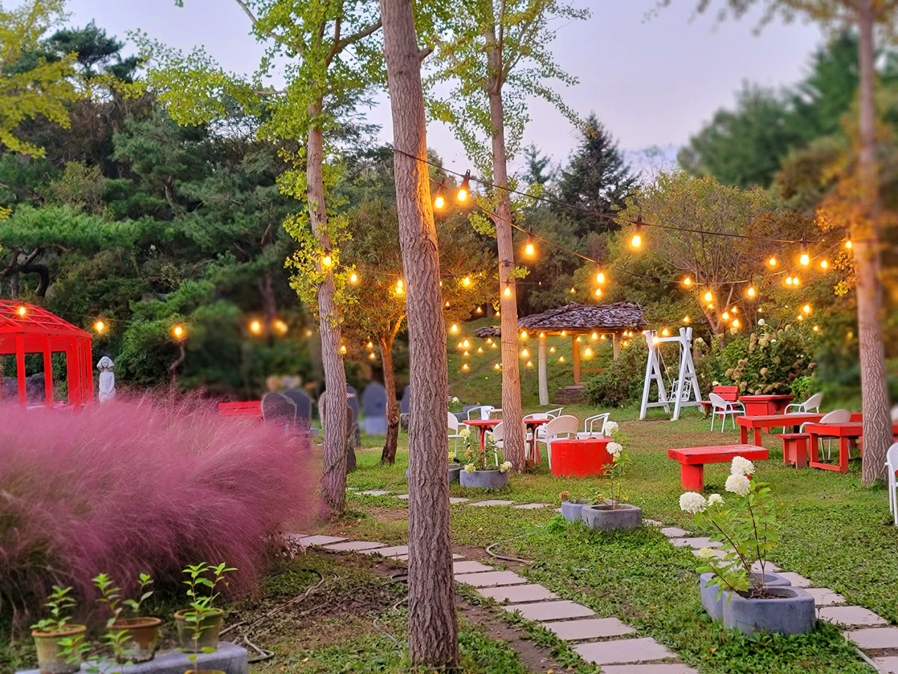
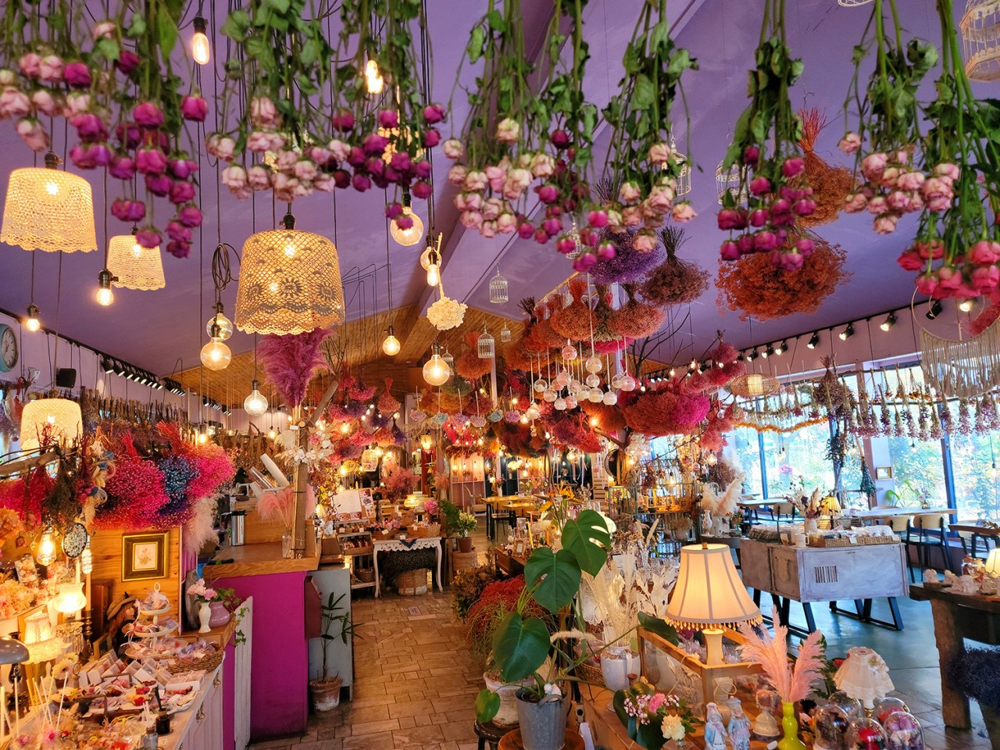
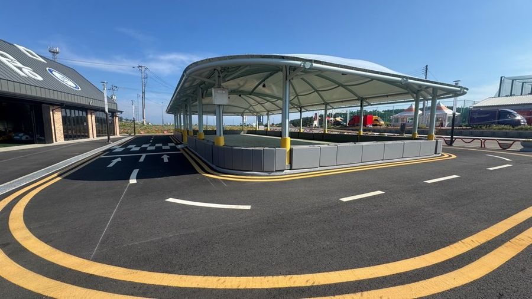
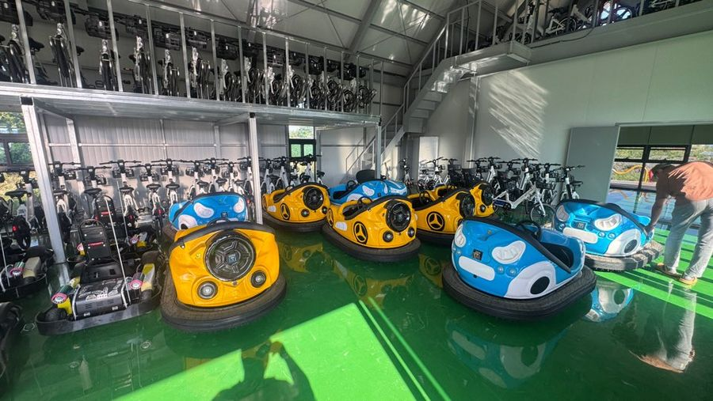
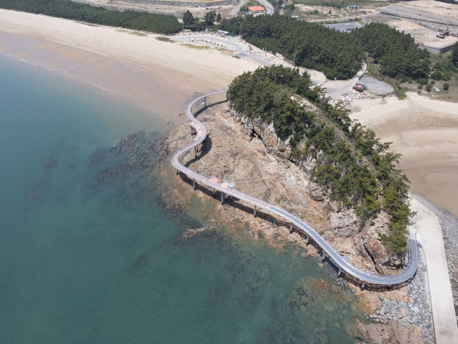

보령석탄박물관
10:00 – 10:50

석탄의 생성 과정부터 채굴 장비, 탄광 마을의 생활까지 살펴보는 국내 최초의 석탄 전문 박물관입니다. 1·2층 전시실과 탄광생활관, 야외 전시장을 둘러봅니다.
2026. 10. 24. SAT
탄광의 기억이 남은 성주산에서 허브 향 가득한 정원을 지나,
해저터널 건너 원산도 바다까지.
가족과 함께 하는 힐링 여행
SCHEDULE
이동 시간은 대형버스 기준이며 현지 교통 상황에 따라 조정될 수 있습니다.
PLACES


석탄의 생성 과정부터 채굴 장비, 탄광 마을의 생활까지 살펴보는 국내 최초의 석탄 전문 박물관입니다. 1·2층 전시실과 탄광생활관, 야외 전시장을 둘러봅니다.


공원 산책 및 관람과 바둑이네 동물원을 함께 둘러봅니다. 허브 티백 만들기 체험은 아이들 위주로 진행되며 어른도 신청하실 수 있습니다. 체험 프로그램을 신청하지 않으신 어른은 리리스 카페 음료로 대체 가능합니다. 점심은 공원 안 허브 꽃밥집에서 먹습니다.


보령해저터널을 건너 원산도로 들어갑니다. 범퍼카와 미니 카트 중 원하는 놀이시설을 탑승할 수 있습니다. 신장이 100cm 이하인 어린 아이는 탑승이 제한될 수 있습니다. 탑승 전 안전 수칙 안내가 있습니다.

데크길을 가족과 함께 걷습니다. 도착 직후 단체사진을 찍고 남은 시간은 자유롭게 산책합니다. 10월 하순 서해 바닷바람이 강하니 겉옷을 꼭 챙겨 주세요.
CHECKLIST
CONTACT
여행에 관한 문의는
카카오톡 채널로 남겨 주세요.
상담 가능 시간 평일 09:00 – 18:00
주최 한국관광공사 대전충남지사, 건설근로자공제회 대전지사
주관 캠핑여지도